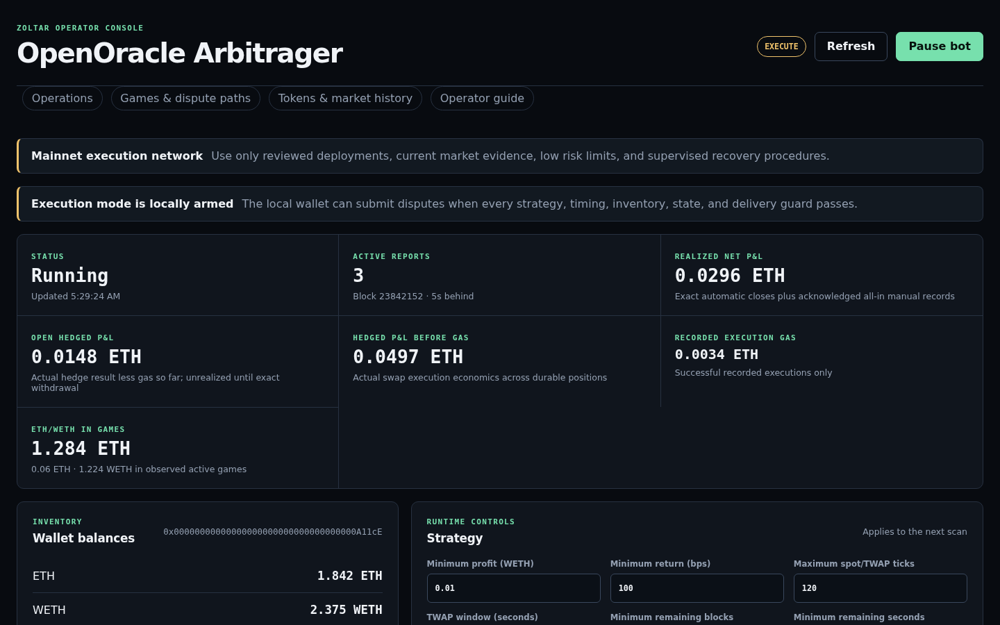
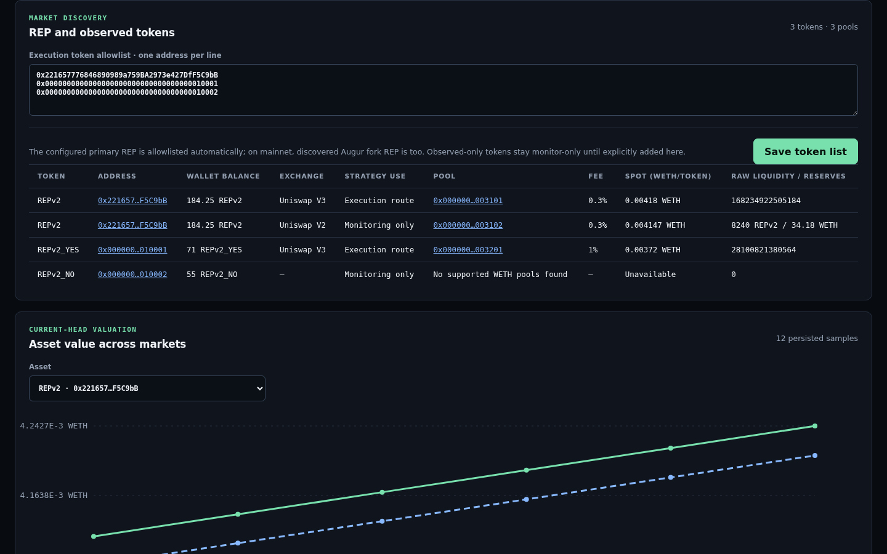

OpenOracle Arbitrager
This operator guide explains how the bot discovers OpenOracle games, compares their exchange rate with onchain liquidity, submits an atomic hedge and dispute, and accounts for the final withdrawal. It covers the command line, local dashboard, strategy math, supported exchanges, durable recovery, and the balances an execution wallet needs.
What the bot does
The bot follows approved OpenOraclePriceCoordinator
reports. For each active WETH/token game it loads the exact report state,
finds supported WETH pools, requests size-aware Uniswap V3 quotes, and
applies timing, TWAP, inventory, allowance, profitability, and risk
limits. Only the best currently eligible opportunity may be selected.
Execution lifecycleBoth public and private delivery sign a parent-bound executor transaction. A missed target cannot later succeed; after twelve descendants and unanimous missing-receipt evidence, the bot safely expires the entry or retries the lifecycle while continuing to watch the old hash for late revert gas.
Command-line quick start
Run commands from the monorepo root. The default is monitoring-only:
without --execute, no transaction can be signed or sent.
Use ./open-oracle-arbitrager/run --help for every option.
One mainnet dry-run scan
ETH_RPC_URL=https://your-mainnet-rpc.example \
./open-oracle-arbitrager/run \
--open-oracle=0xYourOpenOracle \
--coordinator-address=0xReviewedCoordinator \
--lookback-blocks=50000 \
--onceContinuous monitoring with the local UI
ETH_RPC_URL=https://your-mainnet-rpc.example \
./open-oracle-arbitrager/run \
--open-oracle=0xYourOpenOracle \
--coordinator-address=0xReviewedCoordinator \
--uiOpen http://127.0.0.1:4173. The first startup state is Syncing; after the bounded historical scan reaches the head, the state becomes Running. The bot then queries every newly observed block and evaluates opportunities at the newest canonical head.
Sepolia rehearsal with execution armed
PRIVATE_KEY=0xDedicatedTestKey \
./open-oracle-arbitrager/run \
--network=sepolia \
--execute \
--ui \
--rpc-url=https://your-sepolia-read-rpc.example \
--quorum-rpc-url=https://independent-sepolia-rpc.example \
--public-rpc-url=https://your-sepolia-submit-rpc.example \
--submission-mode=public \
--open-oracle=0xReviewedSepoliaOpenOracle \
--coordinator-address=0xReviewedSepoliaCoordinator \
--executor-address=0xVerifiedSepoliaExecutor \
--deployment-manifest=/secure/sepolia-execution-manifest.json \
--rep-address=0xSepoliaReportToken \
--uniswap-router=0xSepoliaSwapRouter| Control | Purpose | Operational note |
|---|---|---|
--network |
Selects mainnet or sepolia. |
Fixes the expected chain ID and network defaults. |
--rpc-url and --quorum-rpc-url |
Primary and independent execution-state reads. | Live execution requires exact quorum agreement. |
--submission-mode |
Chooses private relay or public mempool delivery. | Both modes send one atomic parent-bound call. |
--relay-url |
Adds a Flashbots-compatible private bundle relay. | Repeat for up to eight; capability and chain checks run first. |
--public-rpc-url |
Adds a direct raw-transaction destination. | Every configured endpoint receives the identical signed payload. |
--token-address |
Adds an explicitly reviewed executable token. | Observed but unapproved game tokens remain monitoring-only. |
--once |
Runs one bounded scan and exits. | Useful for monitoring and scheduled diagnostics; incompatible with the UI. |
Wallet balances and approvals
Use a dedicated hot wallet that controls no treasury or unrelated protocol assets. The dashboard shows its address, native ETH, WETH, primary REP, configured-token balances, and an estimated executable portfolio value.
- ETH pays entry, lifecycle, setup, failed public transaction, and recovery gas. Keep a buffer above the displayed reserves.
- WETH funds the report contribution and, for a buy-token hedge, the maximum signed Uniswap input.
- Report token funds the token side when required. This may be REPv2, fork REP, or an explicitly configured ERC-20.
- ERC-20 allowances permit the executor to pull exact entry funding. Setup approvals are never bundled with an opportunity.
- OpenOracle internal allowances permit the executor to move the exact WETH and token proceeds for atomic withdrawal.
The UI can accept a private key because the bot must sign unattended transactions. The key is submitted only to the loopback process and is not returned by the API. Saving it across restarts is an explicit plaintext opt-in to an owner-only settings file; leaving that option off keeps the key in process memory only.
Using the dashboard
Start with --ui. The header shows whether execution is armed
and whether the scanner is syncing, running, paused, stopped, or in
error. Pausing prevents new entries but deliberately continues recovery,
settlement, and withdrawal for capital already at risk.

| Area | What it shows | How to use it |
|---|---|---|
| Summary and balances | Block age, execution state, ETH/WETH/token inventory, gas, revenue, P&L, and value locked in observed games. | Resolve stale-head, low-ETH, or insufficient-inventory warnings before enabling execution. |
| Strategy | Profit floors, TWAP distance/window, timing buffers, and polling interval. | Save changes for the next scan and future restarts. Risk-limit flags remain restart-time controls. |
| RPC and delivery | Read RPC, public fanout, private relays, minimum successful simulations, chain IDs, and health. | Every new endpoint is checked before it is applied. Display labels redact path and query credentials. |
| Transactions and operations | Submission targets, hashes, replacements, gas, status, decisions, and reasons. | Use the reason column to distinguish an unprofitable quote from a safety or infrastructure rejection. |
| Positions | Durable entry/lifecycle state, exact locked and withdrawn amounts, gas, and final profit. | closed-pending-finality is intentionally still at risk; recovery-required needs the runbook. |

How the strategy math works
All contract amounts use integer token units. OpenOracle percentage
rates use precision 10,000,000, and fee multiplication
floors exactly like Solidity:
OpenOracle feeThe bot does not replace integer rounding with floating-point arithmetic.
The next WETH-side report amount is the current amount multiplied by the
game multiplier and capped at escalationHalt. Once the halt
has been reached, OpenOracle advances by one atomic unit. The token-side
amount comes from an executable Uniswap quote at that replacement ratio.
Sell-token direction. The bot receives a size-aware quote for selling the current token amount:
Sell-token hedge P&L before gas The signed minimum-output limit reserves the full configured adverse slippage.
Buy-token direction. The bot requests an exact-output quote for the report token plus both token fees:
Buy-token hedge P&L before gas The signed maximum-input limit rounds upward and is fully funded before entry.
Profit layersQuote-time modeled profit, tracked open hedge economics, and realized net profit answer different questions and are deliberately shown separately.
The conservative selection value is:
Modeled netEvery term is measured
in WETH. It must meet both the absolute WETH floor and
Pmodeled × 10,000 ≥ Breturn × minimumProfitBps.
For a sell-token hedge, Breturn is the report's
WETH contribution plus its WETH fees. For a buy-token hedge it is the
exact-output Uniswap quote's required WETH input. Equality passes the
threshold; integer comparison occurs in WETH wei before display
formatting.
-
Entry gas reserves
1,200,000 × gas price; private mode replaces the gas amount with the largest successful relay simulation. - The slippage reserve is the complete distance between the quote and the signed Uniswap limit, not merely expected slippage.
-
The lifecycle reserve is the larger of the configured floor and
(callbackGasLimit + 900,000) × gas price. - Open hedged net uses actual executor hedge evidence and gas recorded so far. Realized net additionally requires exact withdrawal evidence and twelve canonical descendants.
Supported exchanges and price charts
| Venue | Network | Monitoring | Execution | Price and liquidity meaning |
|---|---|---|---|---|
| Uniswap V3 | Mainnet and Sepolia | Yes: 0.01%, 0.05%, 0.3%, and 1% WETH/token pools | Yes, through QuoterV2 and the authenticated SwapRouter | Spot WETH/token comes from sqrtPriceX96; liquidity is the raw active-range liquidity() value. |
| Uniswap V2 | Mainnet | Yes | No | Spot WETH/token comes from normalized reserves; both reserves are shown. |
| SushiSwap V2 | Mainnet | Yes | No | Spot WETH/token comes from normalized reserves; both reserves are shown. |
| Centralized exchanges and other DEXs | Any | No | No | No offchain API or unsupported venue participates in opportunity selection. |
The dashboard's historical chart stores one current-head sample per pool and block. Every line therefore represents a concrete exchange pool, not an aggregated token price. The exact-value table lists block, observation time, pool, venue, and WETH-per-token price. These spot samples are for comparison; only Uniswap V3 execution uses a size-aware QuoterV2 result and spot/TWAP guard.
On mainnet, startup discovers REPv2 and instantiated fork REP tokens from Augur universe state. Explicitly configured tokens join the execution allowlist. Tokens seen only in approved reports are displayed for monitoring but cannot trigger a trade, and a token with no supported WETH pool is shown explicitly rather than silently omitted.
Finality and durable recovery
- pending-entry
- open
- withdrawing
- closed-pending-finality
- closed
A successful lifecycle receipt is provisional. The bot retains its transaction hash, receipt block number and hash, exact withdrawals, gas, and risk slot until twelve canonical descendants exist. It then rereads the receipt through the independent RPC quorum before releasing risk and recording realized profit.
If a shallow reorganization removes that receipt, provisional gas and
withdrawals are rolled back, the old signed hash is archived for late
revert monitoring, and the position returns to open for a
fresh parent-bound lifecycle attempt. If evidence disagrees, an executor
event is missing, another reporter replaced the bot, or exact assets
cannot be attributed, the state becomes
recovery-required and continues consuming the risk limit.
Persistent files and operational boundaries
| File | Purpose | Protection |
|---|---|---|
settings-NETWORK.json |
Strategy, endpoints, submission mode, pause state, token list, and optional saved signer. | Owner-only; treat as a wallet secret when signer persistence is enabled. |
positions-NETWORK.json |
Crash-critical hashes, intents, accounting, finality evidence, and manual reconciliation. | Owner-only, synchronized atomic replacement, single-process lock. |
history-NETWORK.jsonl |
Confirmed entry history and quote-time tracking. | Owner-only append with file and directory synchronization. |
prices-NETWORK.jsonl |
Per-block, per-pool spot history shown by the chart. | Keep network-specific; malformed records are skipped with diagnostics. |
The dashboard binds to loopback and rejects unexpected Host authorities and cross-origin mutations. Do not expose it through a reverse proxy without adding authentication and transport security. RPC and relay credentials may remain in the owner-only settings form, but operation logs and endpoint status expose only URL origins.